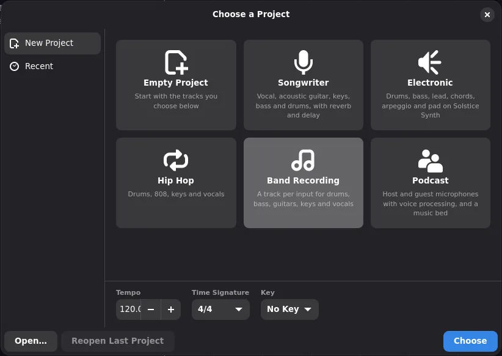

Projects and safety
Projects you can trust with an album
Start from a template, keep every song in one folder, and stop worrying about crashes, power cuts and full disks.
Starting a song
Solstice opens on the Project Chooser. Pick a template, set the tempo, time signature and key, and the project opens ready to record.
- Band Recording: kick, snare and overheads into a drum bus, bass, two guitars panned wide, keys, lead and backing vocals and a reverb bus, each on the next interface input.
- Songwriter: vocal, acoustic guitar, keys, bass and a Drum Kit, with reverb and delay.
- Podcast: host and two guests with gate, EQ and compression, a music bed and a limiter.
- Electronic and Hip Hop starting points, and an Empty Project with as many audio and instrument tracks as you ask for.
Set up a session the way your band works, with your strip settings, routing and cue mixes, and save it with File ▸ Save as Template…. It appears under My Templates, audio included, ready for the next song. Recent projects are on the chooser too, or Solstice can reopen the last project instead.

What a project is
A project is a folder: Song.solstice, holding the session in project.json and every recording in Audio Files. Copy the folder and you've copied the whole song. Projects go in ~/Music/Solstice unless you choose otherwise, and a new project gets its folder straight away, so the first take always has somewhere to go, even before you've named the song.
Audio comes in from WAV, FLAC, AIFF, MP3, Ogg, M4A and CAF, and is converted to the project's sample rate once, on the way in. Save As copies the audio into the new project, so two versions of a song never share files that one of them might change.
Your work is safe
A band will put months into an album in Solstice. Losing a session to a crash, a power cut or a full disk is the worst thing a DAW can do, so Solstice guards against it at every step.
Saving
- Saves can't half-finish. A save is written to a temporary file, flushed to the disk and only then swapped in, so a power cut mid-save leaves the previous save intact.
- The previous save is kept alongside as a backup every time you save.
- A project that won't read opens from its autosave or its backup, whichever is newer, with a note telling you which, and the unreadable file is kept rather than overwritten.
- A project from a newer Solstice is refused rather than opened and saved back in an older format.
- The same project can't be open twice. A second copy of Solstice is told it's already open, so two windows can't overwrite each other's work.
Autosave and recovery
- Autosave runs every two minutes by default, and soon after any change. It writes a recovery copy inside the project and never touches your saved file, so you decide when changes become the real thing.
- After a crash, opening the project offers "Recover Unsaved Changes?". Recovering is itself an undo step, and discarding sets the recovery copy aside rather than deleting it.
- If Solstice itself fails, it writes an emergency autosave of every open project on the way down.
- Takes cut off by a crash are put back from the recording journal. A project that was never saved at all is rebuilt from its recordings, one track each.
Undo
Two hundred steps of undo by default, up to a thousand, each named in the Undo button's tooltip so you know what you're about to take back. Undo is held off while recording or exporting, so it can't pull the floor out from under a take.
Bringing songs in
Drop files on the tracks area, or use File ▸ Import. If the open project is empty, the import goes into it; otherwise it opens in a new window, so it never lands on top of a session by surprise. Each import is one undo step.
Audio files
Drop several files at once and they go onto consecutive tracks from the one you dropped on, creating tracks as needed: the quickest way to bring in a multitrack from another studio.
MIDI files
Each MIDI track with notes becomes an instrument track, with its name, and the tempo map, time signatures, markers and key come with it into an empty project. Choose an instrument for each track in the Library.
Final Cut Pro XML
Final Cut Pro and Logic Pro both export Final Cut Pro XML. Solstice reads its clips with their positions, trims, gain and fades, and its markers, grouping clips into tracks by their audio role. Media is found where the XML says it is, or by searching beside the file, and anything missing is listed by name.
Logic Pro project bundles
Open a Logic Pro project bundle and Solstice reads what it openly can:
- the tempo, time signature, key and sample rate;
- every recording, placed at the bar where it was recorded from the time stamp in the file, with passes recorded over the same spot gathered into take folders;
- any Final Cut Pro XML or MIDI export saved in or beside the bundle, and tracks exported to its Bounces folder.
The arrangement itself is stored in an undocumented format that Solstice doesn't read. For your edits and fades to come across too, export Final Cut Pro XML from Logic Pro next to the project first; Solstice picks it up and uses it.